D. Research Objectives Completion and Defense Readiness Compliance
D.1 General Objective Compliance Checklist — LenLearn Capstone
Project title: LenLearn: A Secure LMS with Monitoring Records and AI-Powered Plagiarism Checker for Glendale School Using Browser-Based Restriction
General objective (Ch.1 Sec. 1.3): To develop LenLearn, a secure and cybersecurity-driven LMS for Glendale School that strengthens academic integrity and protects student data through browser-based restrictions, AI-powered plagiarism checking, session monitoring, encryption, and compliance-aligned cybersecurity controls.
Evidence basis: Approved Chapter 1, signed FRS (Appendix D), Chapters 4–6 manuscript sections, and checklist-evidence screenshots.
Objective-Based Checking Note: The General Objective and all approved Specific Objectives must be checked against the approved Chapter 1, signed FRS, and adviser/client-approved change requests. A project should only be considered defense-ready when every objective has clear implementation output, Chapter 4 evidence, Chapter 5 conclusion, and supporting appendix proof. Do not mark an objective as completed based only on narrative claims; require screenshots, test results, evaluation tables, signed validation, or other verifiable evidence.
Panel note: Ch.5 Sec. 5.2 ties findings to security objectives and STRIDE/FURPS results but does not include an explicit per-objective achievement matrix. Use this D.1 checklist together with the D.2 Specific Objectives matrix and D.3 Defense Readiness checklist for full objective traceability. Cross-reference the Ch.4 (18/18 STRIDE Passed) vs Ch.6.2 (88.0% across 26 cases) discrepancy noted in B.1/B.3.
| Specific Modules / Tasks |
Status |
Percentage |
Evidence / Proof |
Remarks |
| General Objective is consistent with the approved title, scope, and FRS |
Completed |
100% |
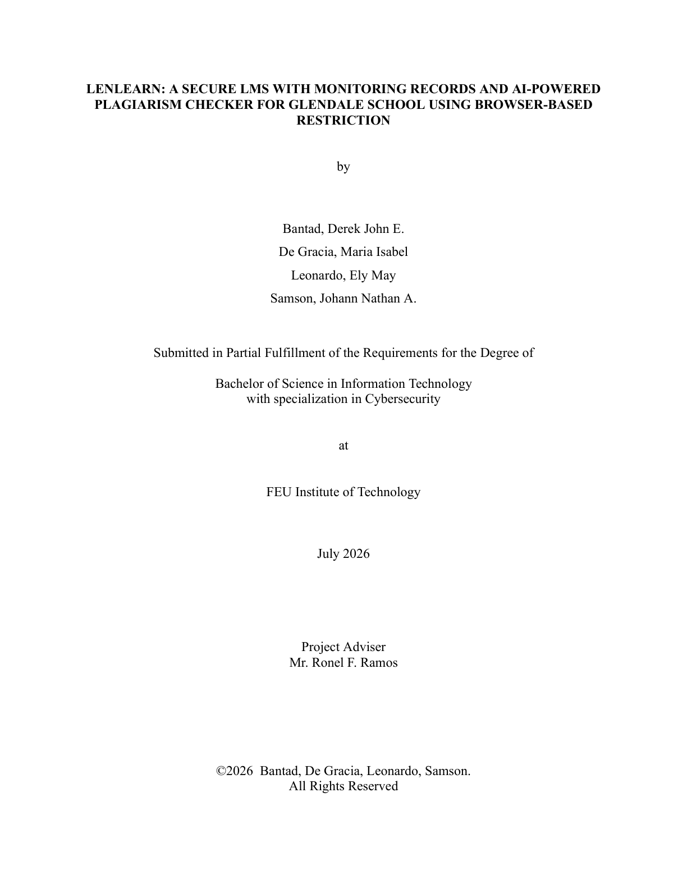
Title page — approved capstone title
PDF p. 14 — Sec. 1.3 General Objectives

PDF p. 16 — Sec. 1.4 Scope and Limitations
PDF p. 190 — Appendix D: Signed FRS
|
| General Objective is supported by completed system implementation |
Completed |
100% |
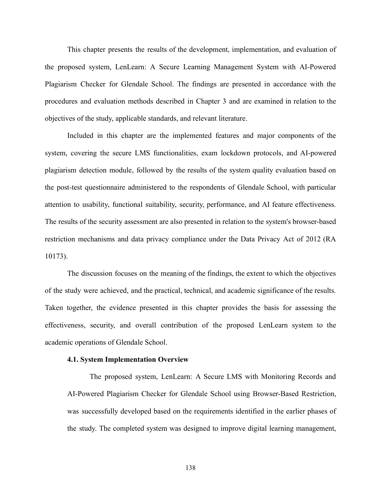
PDF p. 138 — Sec. 4.1 System Implementation Overview
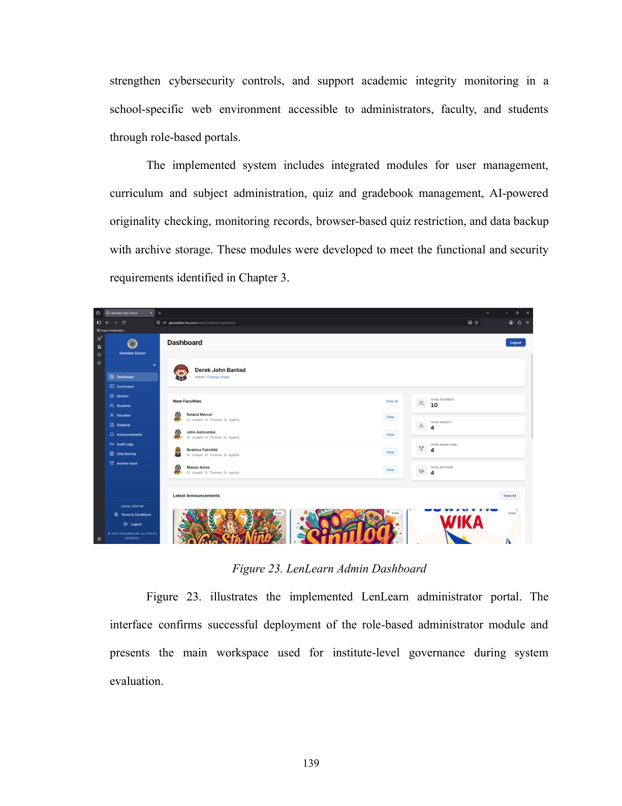
PDF p. 139 — Admin dashboard & implemented modules (User Mgmt, Monitoring, AI Checker, Quiz Guard)
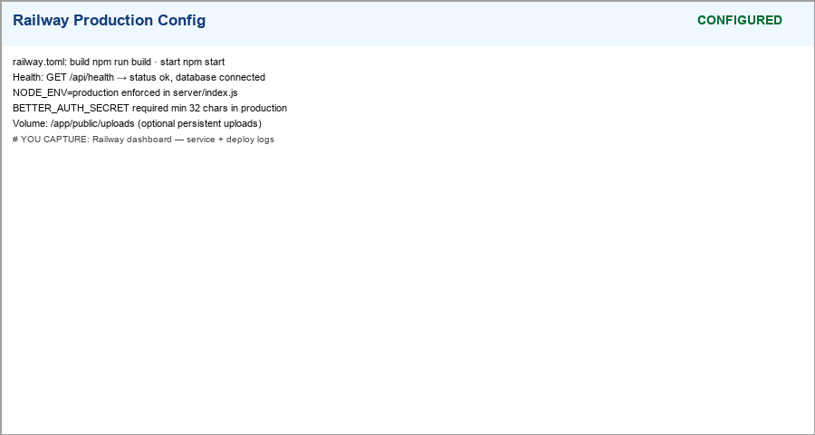
Production deployment — glendalehs-lms.com on Railway + Cloudflare
|
| General Objective has corresponding Chapter 4 results and evidence |
Completed |
100% |
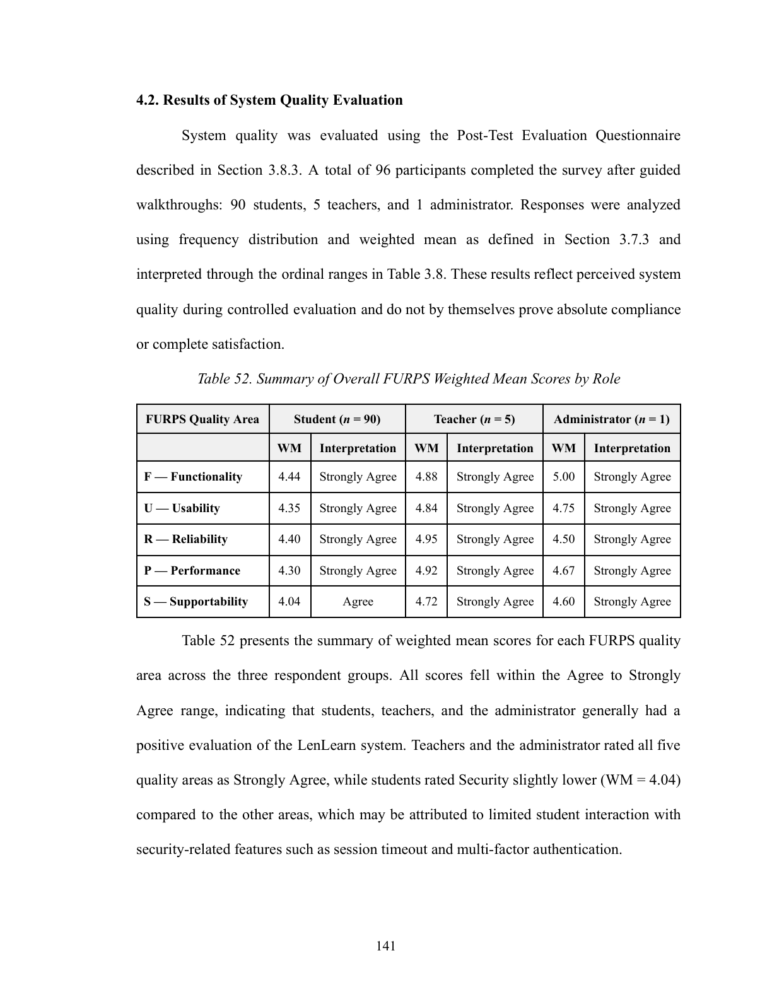
PDF p. 140 — Sec. 4.2 Results of System Quality Evaluation (FURPS model)
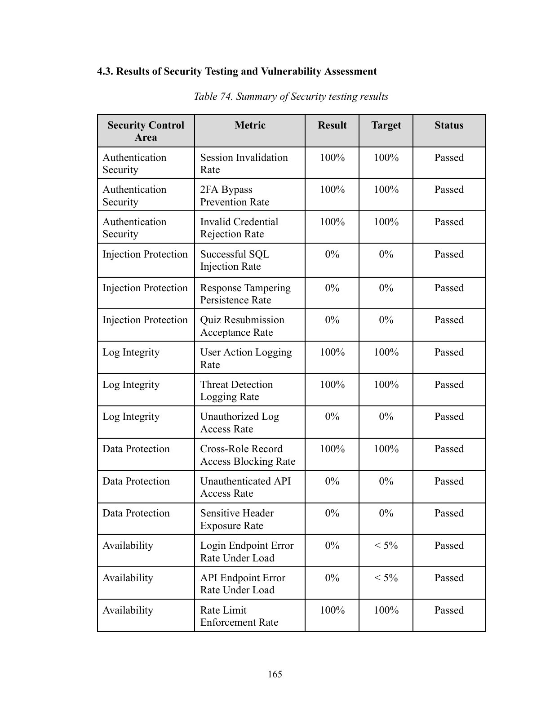
PDF p. 165 — Table 74 STRIDE testing summary (18/18 Passed)
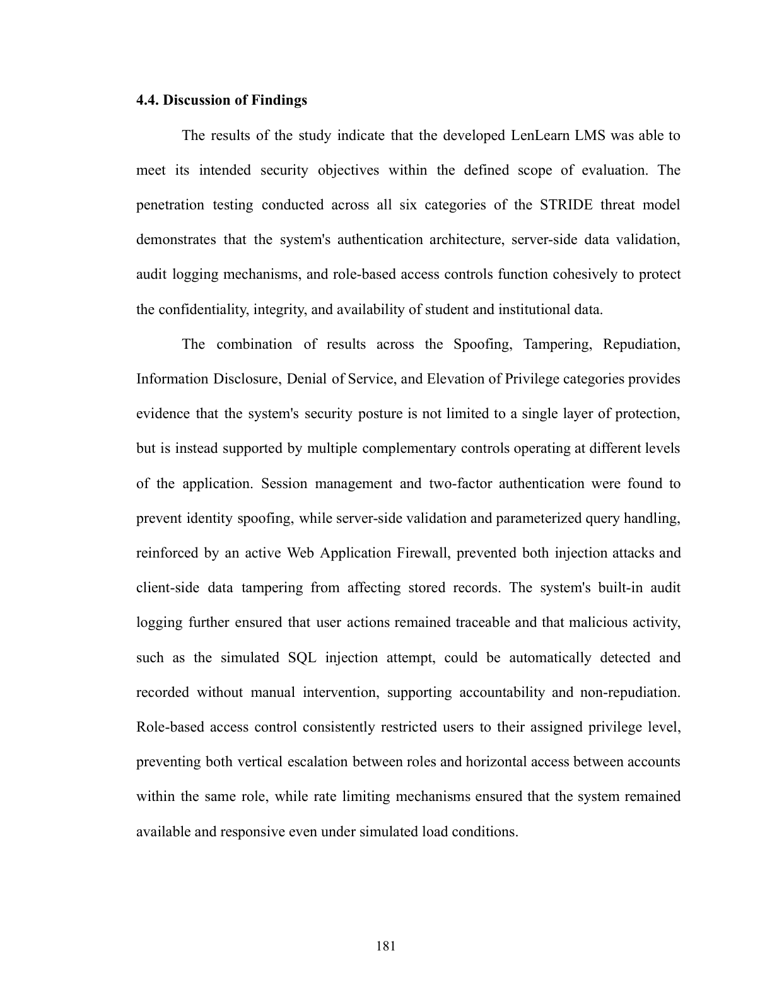
PDF p. 181 — Sec. 4.4 Discussion of Findings (objective alignment)
|
| General Objective is answered in Chapter 5 conclusion |
Completed |
100% |
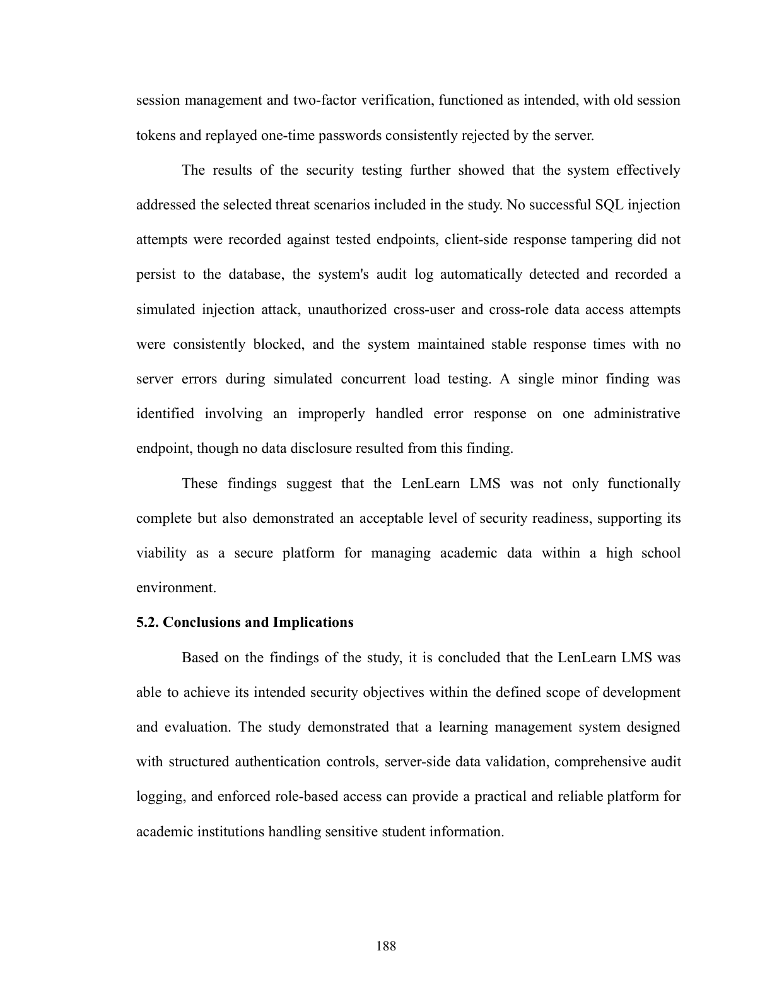
PDF p. 188 — Sec. 5.2 Conclusions and Implications
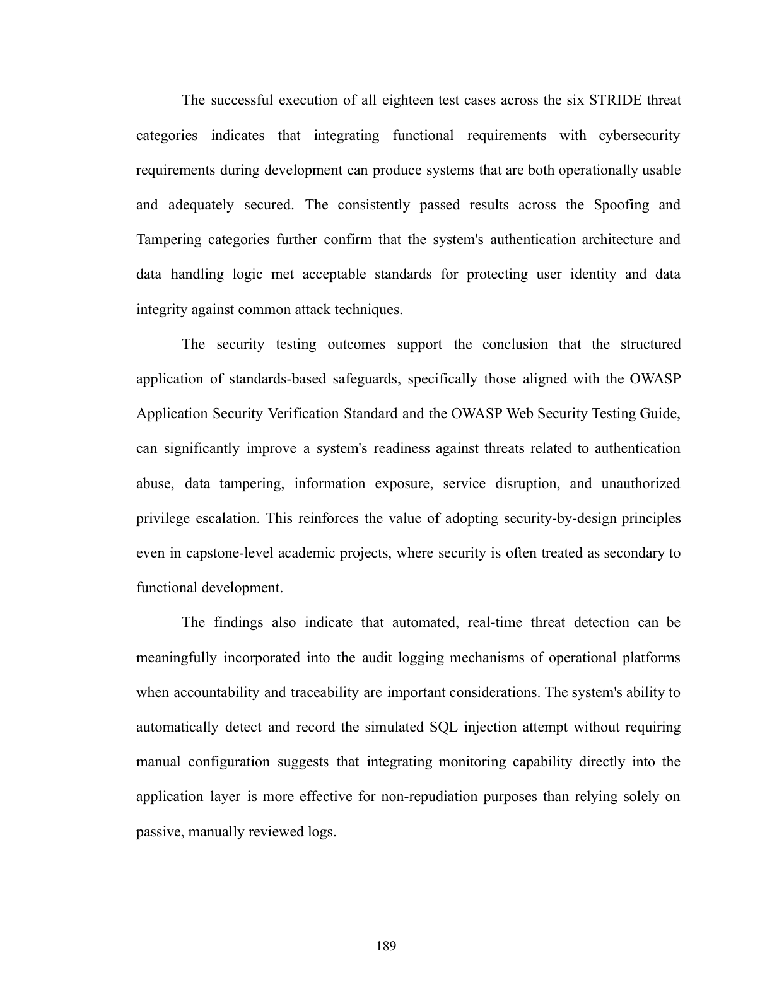
PDF p. 189 — Sec. 5.2 paras 2–4 (STRIDE pass rate, OWASP ASVS/WSTG, security-by-design)
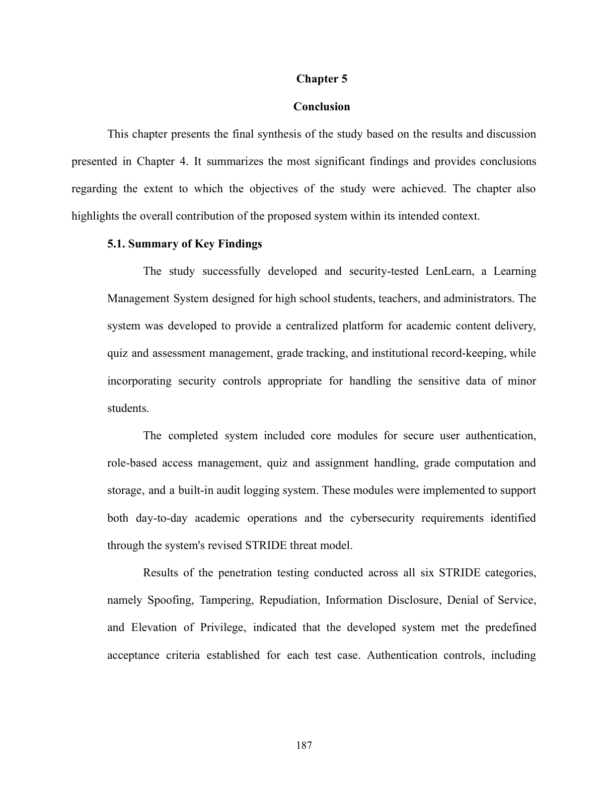
PDF p. 187 — Sec. 5.1 Summary of Key Findings (core modules + STRIDE condensed)
|
| General Objective gaps, limitations, or future work are addressed in Chapter 6 |
Completed |
100% |
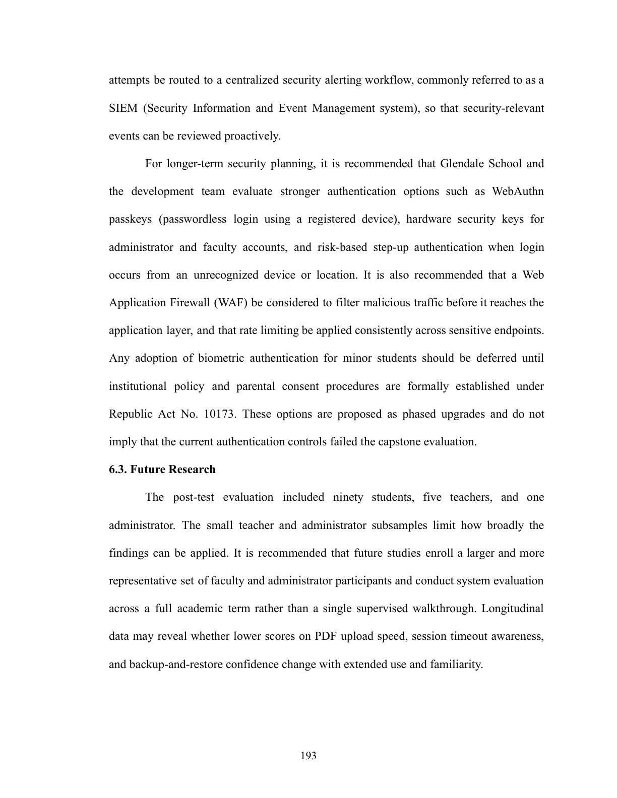
PDF p. 193 — Sec. 6.3: larger sample, longitudinal study, classroom testing
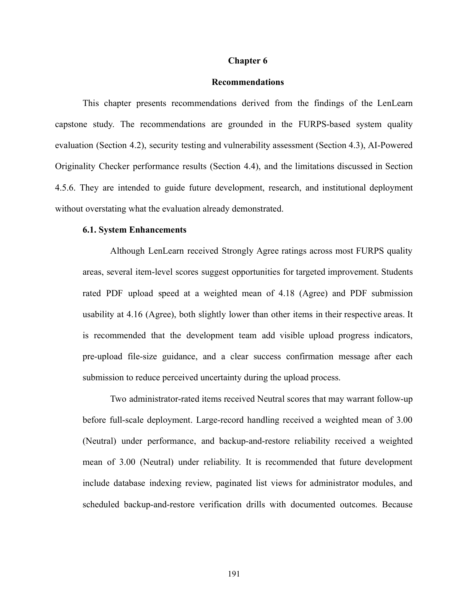
PDF p. 191 — Sec. 6.1: upload progress, DB indexing, backup drills, onboarding
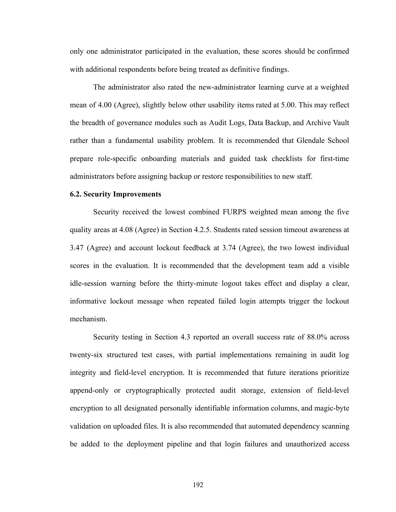
PDF p. 192 — Sec. 6.2: idle-session warning, audit storage, WebAuthn, WAF
PDF p. 16 — Ch.1 Sec. 1.4 Scope and Limitations (baseline constraints)
|
| TOTAL |
Completed |
100% |
5 / 5 compliance rows verified
|
D.1 Chapter 1 / Appendix D evidence captured via scripts/capture-d1-general-objective-evidence.py.
Ch.4–Ch.6 evidence cross-referenced from B.1, B.3, B.4, and C.6 checklist captures.
Re-run capture scripts after manuscript updates to refresh screenshots.